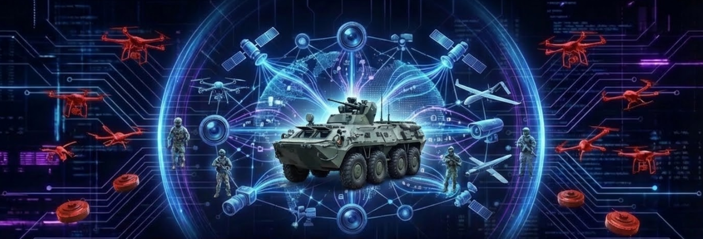

Система оптичної візуальної розвідки середовища та дистрибуції інтелекту в багатоузловій мережі
Технологічний апгрейд бронетехніки, що перетворює її на активний інтелектуальний вузол для автономного динамічного самозахисту.
Єдине обчислювальне ядро для керування всіма юнітами. Якість аналітики вища за будь-який бортовий ШІ окремих дронів.
Миттєва синхронізація тактичної обстановки між усіма учасниками бойової групи на чолі з технікою.
Ліквідація «сліпих зон» та виявлення загроз за межами фізичної броні на недоступних раніше дистанціях.
Автоматична нейтралізація ворожих дронів через систему дешевих перехоплювачів під повним контролем ядра.
«Мангали» та динамічна броня не захищають від послідовних атак та ударів у вразливі зони.
Традиційний захист безсилий проти дронів на оптоволокні чи з автономним машинним зором.
Екіпаж не контролює верхню півсферу та тил через конструктивні обмеження броні.
Відсутність системи раннього виявлення не залишає часу на маневр до моменту вибуху.
FPV-дрон на швидкості 150 км/год долає дистанцію швидше за реакцію людини.
Master Eye виявляє загрозу на дистанції 500м. Nexus розраховує точку зустрічі та автоматично запускає перехоплювач для тарану за межами зони ураження машини.
Створення інтелектуальної аури навколо техніки. Бійці отримують стрім із Master Eye на планшети з підсвіткою ворожих позицій та засад у реальному часі.
Попереду техніки летить малий дрон-сканер. Ші аналізує ґрунт на наявність мін та розтяжок, автоматично сигналізуючи водію про небезпеку.
Один успішний захист техніки окупає встановлення системи на цілу роту бронетехніки.
Радикальне зниження безповоротних втрат досвідченого та високовартісного екіпажу.
Наш перехоплювач ($800) — найдешевший спосіб фізичного знищення повітряної загрози.
Швидкий інтелектуальний апгрейд застарілого парку машин до рівня сучасної війни.
Збірка ядра Nexus, налаштування мережі Wi-Fi 7 та протоколу передачі команд у реальному часі.
Винесення стабілізації польоту в ядро. Тести автономного утримання позиції навколо бази.
Трансляція RAW-відео в ядро, створення інтерфейсу десанту та перевірка стійкості каналу в русі.
Впровадження алгоритмів детекції об'єктів та фінальна демонстрація автономного коригування польоту.